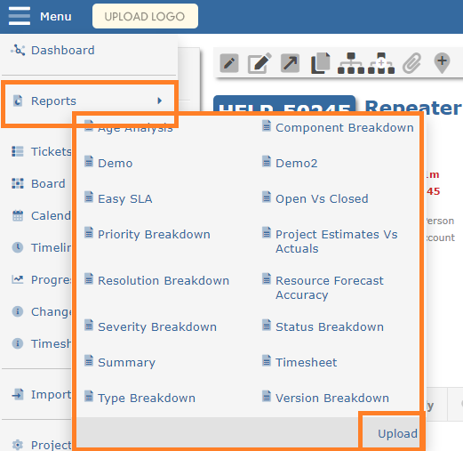

You can develop your own custom reports using Excel and execute them from the menu. Reports reside in the reports folder on the web server, under App_Data.
If you have the permission to upload new reports, you will find the Upload link at the botto of the list of available reports
